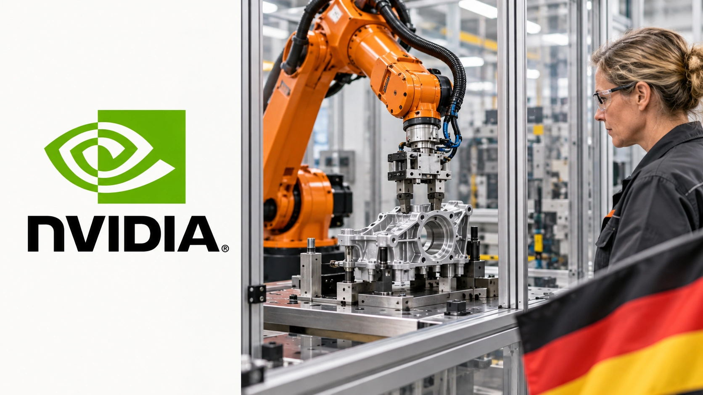

Germany Prepares Nvidia AI Pact as Factories Become the Next Test
Government sources say an industrial AI agreement is due next week. The details will show how Germany plans to turn computing capacity into factory applications.
TTN Research Desk ·

Germany plans to announce an industrial AI agreement with Nvidia next week, Reuters reported Friday, citing government sources. Other partners will participate.
Handelsblatt first reported the plan, including robotics, autonomous driving and industrial models. Friday’s report adds government-source confirmation of the planned announcement.
The practical question is what a manufacturer will be able to do under the agreement that it cannot readily do today. Access to computing is one part of that answer. Making it useful on a production line is another.
There is already an industrial AI foundation
Nvidia announced a Germany-based industrial AI cloud in June 2025, describing a planned system with 10,000 GPUs for manufacturing applications including engineering, simulation, factory digital twins and robotics. That earlier announcement provides context; its capacity figures should not be treated as the specifications of next week’s agreement.
The distinction matters because another partnership headline does not, by itself, establish how much additional computing will be available, who will pay for it or when industrial customers will gain access.
For a smaller manufacturer, a usable service with predictable costs may matter more than a large national computing total. A system that requires extensive custom integration can remain out of reach even when the hardware exists.
Physical AI means software that must work in the real world
A chatbot can be judged by its answers. A robot also has to deal with motion, contact and the limits of its surroundings. Nvidia’s Isaac Sim software lets developers build and test AI-driven robots in simulated physical environments before running them in the real world.
Simulation offers a way to examine a task without repeatedly stopping a production line. It does not make real-world validation optional. A useful assessment would ask whether an application reduces errors or downtime, how much supervision it needs and what happens when conditions change.
That puts factory operators, software integrators and equipment suppliers at the centre of the commercial case. Buying chips is a measurable expense. Establishing a reliable process that earns back that expense takes longer.
What to look for in the announcement
The first details to examine are the participating organisations, their funding commitments, access terms and deployment timetable. Those will help distinguish an immediately usable programme from an agreement to develop one.
A second test is whether customers can identify concrete applications and the costs of running them. Training a model once and operating an industrial service continuously involve different spending decisions.
TTN’s analysis of the financing behind the AI buildout explains why infrastructure announcements also need a demand test. In manufacturing, that test is especially tangible: fewer defective parts, less downtime or a process that becomes cheaper to run. Next week’s terms will show how closely Germany’s plan is tied to those outcomes.
Related reading: How the AI buildout is financed · The demand behind AI chip investment.
Sources (3)
For informational purposes. This article is not investment advice.